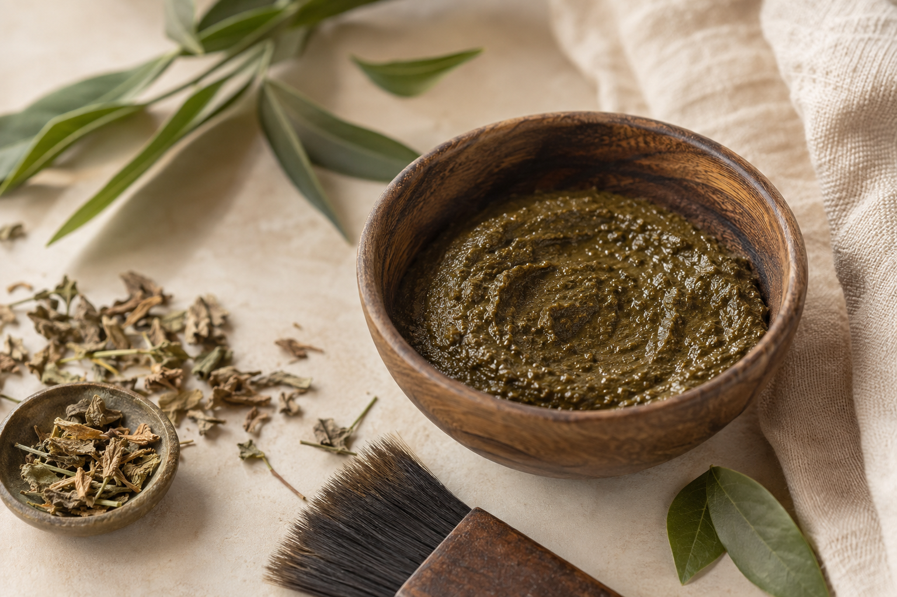
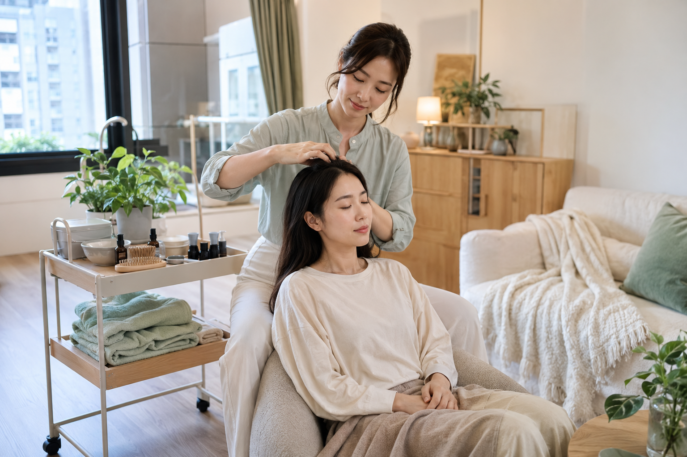

頭皮觀察與淨化養護
適合容易出油、悶癢、頭皮屑或想定期整理頭皮環境的人。
- 需求與生活習慣訪談
- 頭皮影像觀察
- 清潔與日常養護建議
HEAD & SCALP SIGNALS
頭皮狀態可能受到清潔、染髮、作息、壓力與身體變化等因素影響。我們不急著推薦療程，而是先從你的需求開始了解。

ABOUT BERAN
很多人在感覺頭皮不舒服、髮根變得扁塌，或產後發現掉髮增加時，第一個反應是更換產品，卻很少有機會真正了解自己的頭皮。
本然美苑以「先觀察、再養護」為核心，結合頭皮影像、植物草養護與生活習慣梳理，提供雙北一對一居家到府服務。希望每一次服務，不只是短暫放鬆，也讓你更懂得如何照顧自己。
OUR SERVICES
服務內容與頻率會依頭皮狀態、髮長及生活需求調整，初步了解後再提供個人化建議。
適合容易出油、悶癢、頭皮屑或想定期整理頭皮環境的人。
以植物草素材搭配頭皮狀態，提供溫和、放鬆的一對一養護體驗。
適合有白髮染護需求，並希望了解不同染護方式與日常照顧的人。
適合長期用腦、壓力大，或頭頸經常感到緊繃、想好好休息的人。
POSTPARTUM CARE
產後數月出現掉髮增加相當常見，但每個人的恢復速度與身體狀態不同。我們會透過影像紀錄與生活訪談，陪你理解目前的狀態，並建立溫和可執行的居家養護方式。
若有局部禿髮、頭皮紅腫疼痛、傷口或持續異常落髮，將建議優先由皮膚科醫師評估。
LINE 諮詢產後頭皮照護 →
SAFETY & PROCESS
從預約前確認到服務後提醒，重視個別狀況、器材清潔與服務界線。
了解在意的頭皮狀況、過敏史、近期染髮及所在區域。
若有傷口、急性紅腫、滲液或明顯疼痛，將暫緩服務並建議就醫。
接觸用品依用途清潔整理，操作前再次確認當日頭皮與身體狀況。
提供日常照護提醒；持續異常落髮或疑似疾病時，建議由皮膚科評估。
頭皮影像為美容養護觀察，不能用於診斷疾病；植物來源亦不代表完全不會過敏。所有服務皆以當日狀態與安全為優先。
REAL EXPERIENCES
以下為實際服務個案，為保護隱私，姓氏採化名呈現；內容依顧客實際狀況與回饋整理。
「生完孩子之後，洗頭看到排水孔都是頭髮，真的很焦慮，不知道會不會一直掉下去。」
經過頭皮影像觀察與日常清潔方式說明後，她分享：
「最大的收穫，是我終於知道洗頭和吹乾時要注意什麼，也不會每天看到掉髮就一直慌張。整個養護過程很舒服，是照顧孩子之餘，難得可以好好休息的時間。」
「發現頭頂越來越透，經皮膚科醫師評估後，才知道可能有雄性禿。我想了解除了配合醫療，日常還能怎麼照顧頭皮。」
經過頭皮影像紀錄與清潔習慣整理後，他分享：
「以前看到生髮產品就想買，現在比較知道哪些問題要問醫師、哪些屬於日常養護。有人協助我固定記錄，也讓我不會一直自己猜測。」
「早上才洗頭，下午就開始出油、扁塌，有時候還會悶癢。我原本以為是洗得不夠乾淨，所以一直換清潔力很強的洗髮精。」
經過頭皮影像觀察與洗頭方式調整後，她分享：
「以前會一直用力洗，甚至用指甲抓頭皮。現在比較知道怎麼清潔和觀察自己的狀態，養護過程後也感覺頭皮清爽、舒服許多。」
個案內容為顧客個人狀況與主觀感受，不代表所有人皆有相同結果。頭皮影像觀察與養護不能取代醫療診斷或治療；如有持續異常落髮、局部禿髮、紅腫、疼痛或傷口，請由皮膚科醫師評估。
SCALP KNOWLEDGE
用容易理解的方式認識常見狀況，知道哪些能日常照護、哪些應交由醫療專業判斷。
產後數月出現掉髮增加，常與荷爾蒙變化後較多毛髮同時進入休止期有關。美國皮膚科醫學會指出，多數產後大量掉髮屬暫時現象，通常會隨時間逐步恢復。
雄性禿又稱雄性激素性落髮，可能表現為髮際線後退、頭頂逐漸稀疏或髮絲變細。不同落髮原因需要不同處理，單靠頭皮影像或掉髮根數不能自行確診。
出油、屑或搔癢可能與清潔方式、產品、環境或皮膚狀況有關。用指甲抓洗或反覆強力去油，可能增加刺激；適合的洗髮頻率需依個人油脂、活動量與頭皮反應調整。
以上內容為一般衛教資訊，不能取代醫師診斷或治療；個人狀況如有疑問，請諮詢皮膚科醫師。
INSTITUTIONAL PARTNERSHIP
提供雙北月子中心、產後照護單位、社區及企業之頭皮衛教、個別觀察與養護體驗。可依場地、人數與服務目的共同規劃，並於合作前確認流程、空間需求、衛生方式及服務界線。
QUESTIONS
目前提供雙北居家到府服務。加入官方 LINE 並提供所在區域，我們會協助確認是否可安排。
不確定也沒關係。請先告訴我們最在意的問題、髮長、近期染髮情況與希望的服務日期，我們會先協助判斷。
不一定。植物來源不代表完全不會引起過敏，預約時請主動告知過敏史；頭皮有傷口、急性紅腫或感染時不建議操作。
不能。影像觀察屬美容養護評估，用來了解頭皮表面與毛髮外觀，不能取代皮膚科診斷。
每個人的產後恢復情況不同，請先透過 LINE 告訴我們產後時間、目前身體狀況及頭皮困擾，再一起評估適合的安排。如有明顯異常症狀，建議先詢問醫師。
PRIVATE CONSULTATION
加入官方 LINE，告訴我們目前最在意的頭皮問題、髮長、近期染髮時間與所在區域，我們會協助你從適合的方向開始。